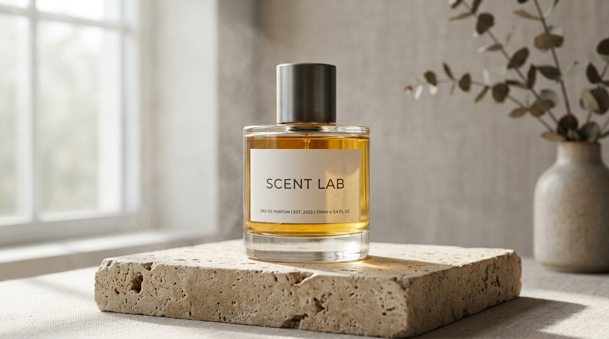

Research Edition No. 01 · 익명 감각 인지 연구
당신은 향을
어떻게 상상하나요?
전문적 향조부터 일상적 비유까지, 텍스트가 후각적 상상력으로 전환되는 방식을 탐색합니다. 향에 대한 솔직한 생각을 들려주세요.

개인식별정보 비수집 및 익명 처리 보장
본 설문은 이름, 이메일, 전화번호, IP 등 식별 정보를 일체 요구하거나 수집하지 않습니다. 수집된 응답은 연구 목적의 집계에만 활용되며, 제출 즉시 전체 참여자의 익명 통계를 확인하실 수 있습니다.
모든 필수 항목에 답변해 주세요.
응답을 제출하는 중입니다
익명 데이터를 안전하게 기록하고 실시간 통계 결과를 불러오고 있습니다...
응답이 성공적으로 제출되었습니다
소중한 의견에 깊이 감사드립니다. 전체 참여자의 실시간 익명 집계 통계를 확인하세요.
전체 참여자 응답 실시간 집계
익명 통계 데이터설문 조사가 종료되었습니다
SCENT LAB 향수 인식 조사가 마감되었습니다. 참여해 주신 모든 분들께 진심으로 감사드립니다.
접속 또는 저장 중 오류가 발생했습니다
일시적인 네트워크 장애이거나 서버 설정 확인이 필요합니다.